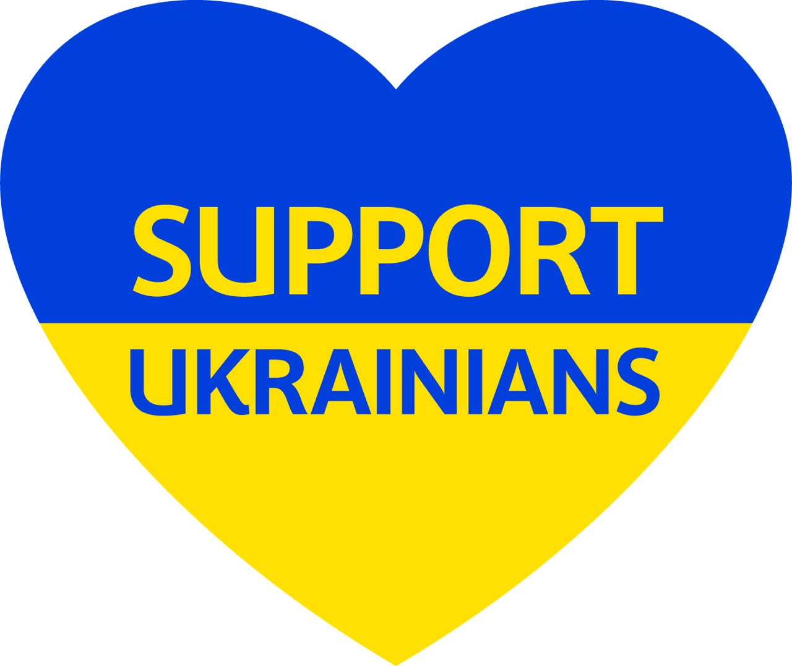

SUPPORT UKRAINIANS
DONATIONS RECEIVED
7 000 kuna

"Support Ukrainians" campaign is a
joint initiative of the
Biosphere
Corporation (the biggest
Ukrainian manufacturer and
distributor of household and
hygiene products) with top
European retailers to support
Ukrainian producers.
Together we will overcome all the
hurdles
and most importantly - win!
Thank you for your contribution and support of Ukraine and every Ukrainian!